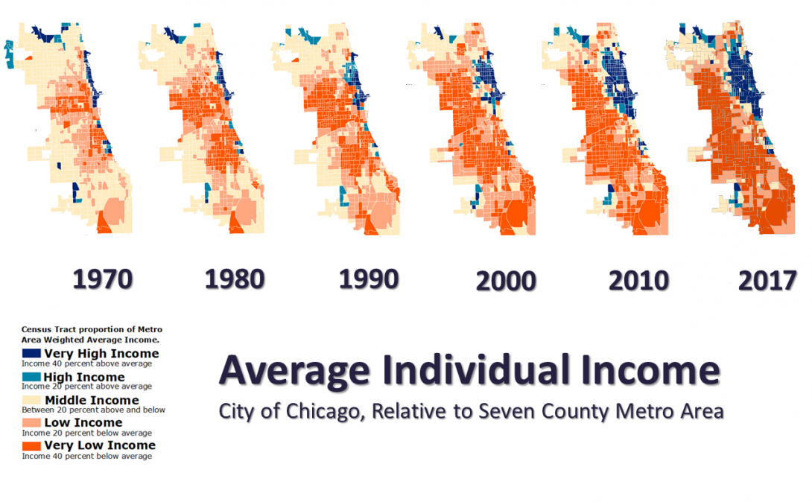
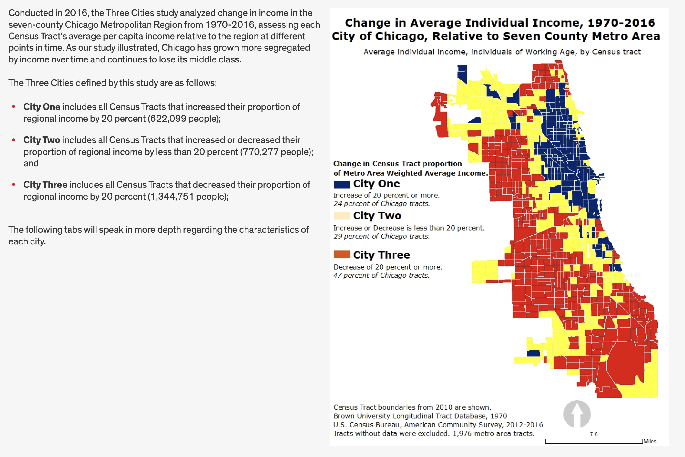
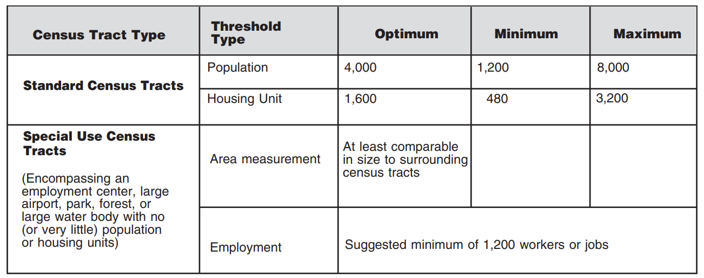
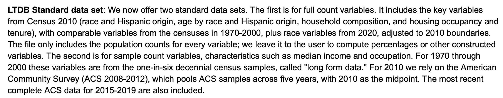
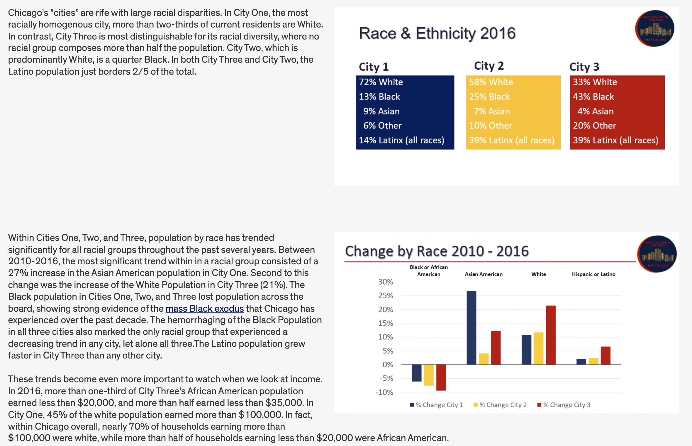
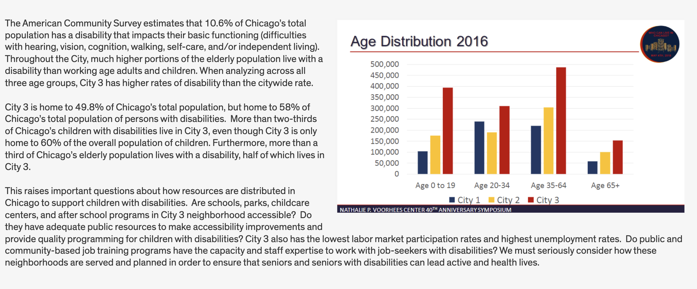
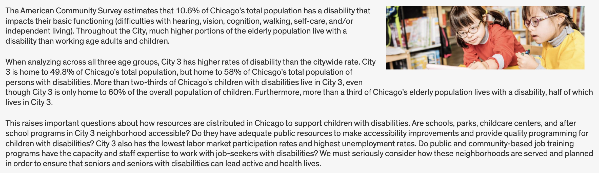
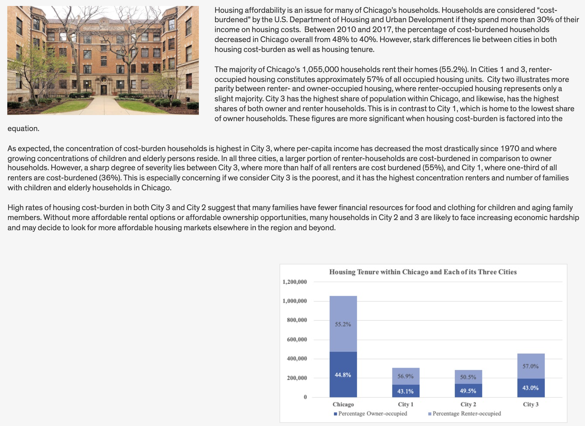
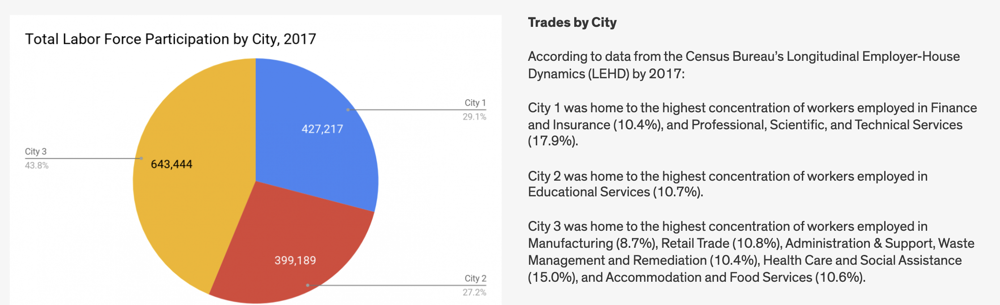

Neighborhood Change
Introduction
In this lab, we’ll explore in detail the Nathalie P. Voorhees Center’s methodology for measuring neighborhood change. The center has produced multiple analyses and strategies for measuring such change, focused on the Chicago metropolitan area.
By the end of this lab, you will replicate elements of the Voorhees Center’s Who Can Live in Chicago? report including maps and other visualizations of neighborhood change. We will develop a code base that could be applied to any location in the United States.
Goals
In this lab, we will use a combination of decennial census data and American Community Survey data to examine patterns of neighborhood income change. We will overlay on these patterns of income change information about the demographics of who lives in these neighborhoods. Our goals for this lab are as follows:
- Continue to work with common sources of sociodemographic information, including those that have been pre-processed by sources other than the Census Bureau.
- Think critically about data processing pipelines and data requirements.
- Explore strategies for spatial longitudinal data description and analysis.
Taking a close look at the visuals from the Voorhees Center website, they calculate for each census tract in each year the average per capita income for the time periods 1970, 1980, 1990, 2000, 2010, and 2017 for each census tract and then compare it to the regional weighted average income.

They classify tracts based upon whether they are:
- Very High Income: Greater than 40% above the regional average
- High Income: 20% - 40% above the reg ional average
- Middle Income: 20% below to 20% above the regional average
- Low Income: 20% below to 40% below the regional average
- Very Low Income: Greater than 40% below the regional average
After classifying tracts, the study examines change over time, and then examines recent demographic characteristics based upon this change.
 This gives us a sense of what we need to do to prepare our data.
Github Lab Repository
If you have not already done so, follow this link to accept the lab Github Classroom assignment repository.
Introduction to LTDB Data
At this point, you have spent time working with census data and common census geographies. We have used the tidycensus package to download census data from the Census Bureau’s servers using API calls.
In this lab, we are going to look at another source of historical census data - the Longitudinal Tract Database. Census tracts are a common geography used by planners and other analysts because tracts roughly approximate neighborhoods, especially in highly urbanized areas where population density means that tracts are relatively small. One challenge faced by analysts looking to examine neighborhood level characteristics over time is that the geographic definitions for census tracts change every 10 years following the decennial census. These changes are performed as part of the Census’ Participant Statistical Areas Program (PSAP).
While some tracts may stay the same, some may be split in cases where the population increases, and others may be merged in cases where the population decreases. See this quick reference guide for more information on thresholds for redefinition:

The Census Bureau produces geographic relationship files which can help show the relationships between geographies over time.
| GEOID_TRACT_10 | GEOID_TRACT_20 | NAMELSAD_TRACT_10 | NAMELSAD_TRACT_20 | AREALAND_TRACT_10 | AREALAND_TRACT_20 |
|---|---|---|---|---|---|
| 01001020100 | 01001020100 | Census Tract 201 | Census Tract 201 | 9,827,271 | 9,825,304 |
| 01001020200 | 01001020100 | Census Tract 202 | Census Tract 201 | 3,325,674 | 9,825,304 |
| 01001020200 | 01001020200 | Census Tract 202 | Census Tract 202 | 3,325,674 | 3,320,818 |
| 01001020300 | 01001020300 | Census Tract 203 | Census Tract 203 | 5,349,271 | 5,349,271 |
| 01001020400 | 01001020400 | Census Tract 204 | Census Tract 204 | 6,384,282 | 6,384,282 |
| 01001020500 | 01001020501 | Census Tract 205 | Census Tract 205.01 | 11,408,867 | 6,203,654 |
Note from these example records shifts in tract definitions and areas. These relationship files can help you identify which census tracts have changed, however, creating consistent estimates over time from this information is challenging. Researchers tend to use strategies that either attribute characteristics using either area or share of population to weight how portions of one tract might translate into a new boundary in a different year.
Brown University’s Spatial Structures in the Social Sciences group has produced a Longitudinal Tract Database which provides demographic estimates for prior decennial census years 1970, 1980, 1990, and 2000 adjusted to 2010 boundaries. The files also include selected demographic indicators that are comparable across each of these decennial census enumerations (the questions are asked in the same or similar enough way to be able to reliably compare these qualities over time).
LTDB data come from two sources:
Decennial “short form” census data from the 100 percent count of the population. This includes race and ethnicity, age, household composition, and household tenure information.
Decennial “long form” census data administered to a sample of 1 in 6 households. These surveys contain far more detailed information on the characteristics of the population.
Decennial data continues to be collected, but the 1 in 6 count sample data has now been replaced by the American Community Survey which annually samples the population creating valuable intercensal estimates used by analysts today.
You can find more information about the LTDB in the following technical documentation.
In order to examine income and demographic change for census tracts, we’re going to use LTDB data, and ultimately will supplement what’s in these data with additional ACS data. We do this so that we can compare estimates over time using the same census tract geographies.
Setup
Let’s get set up by loading a few packages:
Code
library(gt)
library(tidyverse)LTDB Data Download
Let’s start by downloading LTDB data for analysis.
Go to the data download page. You will need to enter your email address and certify that you will follow terms of use for the data.
Make note of what datasets are aggregated in the LTDB Standard Datasets. 
Download both the full and sample standard data set files for all years. Also download the codebook.
Decompress the downloaded folder containing the data files and place the raw data csv files in your raw data folder. You should have 12 files - six “fullcount” files and six “sample” files (you can ignore those files in the fullcount download with “Global Neighborhood” in their file name).
Place the codebook in your data documentation folder.
Now that we have data and documentation manually downloaded, we can import the data for analysis.
Data Import
Let’s import our data. These are csv files - in the past we’ve used read_csv() from the readr package to do this (readr is part of the tidyverse so you don’t need to load it separately).
For clarity, use the prefix “F_” for full count data and “S_” for sample data when you read the LTDB into table objects in R. Go ahead and import the ten data files:
Code
F_1970<-read_csv("data_raw/LTDB_Std_1970_fullcount.csv")
S_1970<-read_csv("data_raw/ltdb_std_1970_sample.csv")
F_1980<-read_csv("data_raw/LTDB_Std_1980_fullcount.csv")
S_1980<-read_csv("data_raw/ltdb_std_1980_sample.csv")
F_1990<-read_csv("data_raw/LTDB_Std_1990_fullcount.csv")
S_1990<-read_csv("data_raw/ltdb_std_1990_sample.csv")
F_2000<-read_csv("data_raw/LTDB_Std_2000_fullcount.csv")
S_2000<-read_csv("data_raw/ltdb_std_2000_sample.csv")
F_2010<-read_csv("data_raw/LTDB_Std_2010_fullcount.csv")
S_2010<-read_csv("data_raw/LTDB_std_200812_Sample.csv")
F_2020<-read_csv("data_raw/LTDB_Std_2020_fullcount.csv")
S_2020<-read_csv("data_raw/LTDB_std_201519_Sample.csv")Now that we have all of the data loaded, we can start working on preparing it for analysis.
Data Preparation
Isolate Income Data
We need to start by identifying the variable(s) containing income information. Go into the data codebook and search for income. We have information on median household income, some breakdowns by race and ethnicity, and per-capita income.
Let’s move forward with the per-capita income information, since this is what is listed in the Voorhees study. We will need to pull that information from each of the data years 1970, 1980, 1990, 2000, 2010 (as proxied by 2008-2012 ACS data, and 2020 (as proxied by 2014 - 2019 ACS data)).
For each of the five decades, create a new dataset inc_[year] that contains the 2010 tract identifier (TRTID10), and the income per capita variable (INCPC[year]). For the 2010 data, also include the state identified (statea), the county identified (countya), and the tract identifier (tracta):
Code
inc_70<-S_1970 |> select(TRTID10, INCPC70)
inc_80<-S_1980 |> select(trtid10, incpc80)
inc_90<-S_1990 |> select(TRTID10, INCPC90)
inc_00<-S_2000 |> select(TRTID10, INCPC00)
inc_10<-S_2010 |> select(tractid, incpc12)
inc_20<-S_2020 |> select(tractid, statea, countya, tracta, incpc19)Now that we’ve isolated the income per capita data, we can start to think about how we’d join it all together for the purposes of mapping and further analysis.
One thing we should immediately note here is that there are different numbers of observations for each year. For instance, inc_20 (observations for 2020) contains 73,056 observations:
Code
nrow(inc_20)[1] 73056inc_70 contains 52,759 observations:
Code
nrow(inc_70)[1] 52759This should guide our strategy for how we join the data together. Our join strategy should try to keep all records corresponding to the observation years that have more observations (this is due to differences in geographic coverage between each decade).
Another thing we may want to handle before we join the data together are to standardize column names. You’ll note from selecting columns and constructing the inc_[year] datasets that there’s different capitalization and naming for some years. We can fix this when we’re selecting our data by specifying [new name] = [column name] in our select calls:
Code
inc_70<-S_1970 |> select(TRTID10, INCPC70)
inc_80<-S_1980 |> select(TRTID10 = trtid10, incpc80)
inc_90<-S_1990 |> select(TRTID10, INCPC90)
inc_00<-S_2000 |> select(TRTID10, INCPC00)
inc_10<-S_2010 |> select(TRTID10 = tractid, INCPC12 = incpc12)
inc_20<-S_2020 |> select(TRTID10 = tractid, STATE = statea, COUNTY = countya, TRACT = tracta, INCPC19 = incpc19)We have another major problem to deal with before we can join these data together. Take a look at the column types using the str() command:
Code
str(inc_70)tibble [52,759 × 2] (S3: tbl_df/tbl/data.frame)
$ TRTID10: num [1:52759] 1e+09 1e+09 1e+09 1e+09 1e+09 ...
$ INCPC70: num [1:52759] 2850 2597 2876 2567 2847 ...Code
str(inc_80)tibble [59,187 × 2] (S3: tbl_df/tbl/data.frame)
$ TRTID10: num [1:59187] 1e+09 1e+09 1e+09 1e+09 1e+09 ...
$ incpc80: num [1:59187] 0 4648 5804 7668 6339 ...Code
str(inc_90)tibble [72,693 × 2] (S3: tbl_df/tbl/data.frame)
$ TRTID10: num [1:72693] 1e+09 1e+09 1e+09 1e+09 1e+09 ...
$ INCPC90: num [1:72693] 11663 8555 11782 15323 14492 ...Code
str(inc_00)tibble [72,693 × 2] (S3: tbl_df/tbl/data.frame)
$ TRTID10: num [1:72693] 1e+09 1e+09 1e+09 1e+09 1e+09 ...
$ INCPC00: num [1:72693] 17771 14217 18346 19741 24492 ...Code
str(inc_10)tibble [73,056 × 2] (S3: tbl_df/tbl/data.frame)
$ TRTID10: chr [1:73056] "01101005302" "01101005402" "01101001800" "01095030600" ...
$ INCPC12: num [1:73056] 18084 18006 24799 21889 16953 ...Code
str(inc_20)tibble [73,056 × 5] (S3: tbl_df/tbl/data.frame)
$ TRTID10: chr [1:73056] "01073001100" "01073001400" "01073002000" "01073003802" ...
$ STATE : chr [1:73056] "Alabama" "Alabama" "Alabama" "Alabama" ...
$ COUNTY : chr [1:73056] "Jefferson County" "Jefferson County" "Jefferson County" "Jefferson County" ...
$ TRACT : chr [1:73056] "Census Tract 11" "Census Tract 14" "Census Tract 20" "Census Tract 38.02" ...
$ INCPC19: num [1:73056] 21518 20209 15153 17416 16570 ...Some of our TRTID10 colums are defined as character and others as numeric. Although these FIPS codes look like numbers, they are unique IDs and we want to make sure that they are consistently stored as character vectors. This is also important, because some of the states that come early in the alphabet start with “0” (for instance, Alabama is state “01”). If these import as numeric, that leading zero may be lost. This means we need to go back to our import steps and explicitly specify how read_csv() should import these columns.
When read_csv() initiates the process of reading data, it reads the first several rows of data that then makes an educated guess as to the format to use for each column of data. We can override this and explicitly tell read_csv() what format to use for particular columns using the col_types option. We specify column types by providing an equivalency statement. For instance col_types = cols(TRTID10 = col_character()) would say please let me explicitly define a column type. Where a column is named “TRTID10”, read in this column and assign it’s contents as character. We could explicitly set other types as needed (e.g. col_numeric(), col_boolean(), etc.).
Code
F_1970<-read_csv("data_raw/LTDB_Std_1970_fullcount.csv", col_types = cols(TRTID10=col_character()))
S_1970<-read_csv("data_raw/ltdb_std_1970_sample.csv", col_types = cols(TRTID10=col_character()))
F_1980<-read_csv("data_raw/LTDB_Std_1980_fullcount.csv", col_types = cols(TRTID10=col_character()))
S_1980<-read_csv("data_raw/ltdb_std_1980_sample.csv", col_types = cols(trtid10=col_character()))
F_1990<-read_csv("data_raw/LTDB_Std_1990_fullcount.csv", col_types = cols(TRTID10=col_character()))
S_1990<-read_csv("data_raw/ltdb_std_1990_sample.csv", col_types = cols(TRTID10=col_character()))
F_2000<-read_csv("data_raw/LTDB_Std_2000_fullcount.csv", col_types = cols(TRTID10=col_character()))
S_2000<-read_csv("data_raw/ltdb_std_2000_sample.csv", col_types = cols(TRTID10=col_character()))
F_2010<-read_csv("data_raw/LTDB_Std_2010_fullcount.csv", col_types = cols(tractid=col_character()))
S_2010<-read_csv("data_raw/LTDB_std_200812_Sample.csv", col_types = cols(tractid=col_character()))
F_2020<-read_csv("data_raw/LTDB_Std_2020_fullcount.csv", col_types = cols(tractid=col_character()))
S_2020<-read_csv("data_raw/LTDB_std_201519_Sample.csv", col_types = cols(tractid=col_character()))Then we can go ahead and pull out our income columns as we did before:
Code
inc_70<-S_1970 |> select(TRTID10, INCPC70)
inc_80<-S_1980 |> select(TRTID10 = trtid10, incpc80)
inc_90<-S_1990 |> select(TRTID10, INCPC90)
inc_00<-S_2000 |> select(TRTID10, INCPC00)
inc_10<-S_2010 |> select(TRTID10 = tractid, INCPC12 = incpc12)
inc_20<-S_2020 |> select(TRTID10 = tractid, STATE = statea, COUNTY = countya, TRACT = tracta, INCPC19 = incpc19)Let’s run one more check on the TRTID10 columns. Lets chech the number of characters in out TRTID columns. Every combined state-county-tract FIPS code should be 11 characters long:
- 2 state characters
- 3 county characters
- 6 tract characters
Lets take our inc_70 dataset, group it by the count of the number of characters in each observation in the TRTID10 column (nchar()), and then ciybt the number of observations:
Code
inc_70 |>
group_by(nchar(TRTID10)) |>
summarise(n())# A tibble: 2 × 2
`nchar(TRTID10)` `n()`
<int> <int>
1 10 11375
2 11 41384Hmm - in the 1970 income data, we have 11,375 observations with less than the expected number of characters. Why might this be? This could be an artifact of the data we downloaded or could be a function of how read_csv() is importing these data.
Past experience tells me that we are missing the leading zero from states with state FIPS codes under 10. We can easily add this back in using the str_pad() command from the stringr package - this package has tools for modifying strings or character vectors.
Code
inc_70<-inc_70 |>
mutate(TRTID10 = str_pad(TRTID10, width = 11, side="left", pad= "0"))The first part should be straightforward - we’re overwriting the existing inc_70 data with an updated version. We’re using mutate() to alter the TRTID10 column. We’re using str_pad() to “pad” the TRTID10 column. The desired width (number of characters) is 11, we’re going to add our pad to the left side of the existing string, and the pad we’ll add is the character “0”.
str_pad() will add however many pad characters we need to get to the desired length. For instance, if we were padding a string “123” with “A” and specified a width of 5, we would get “AA123”. If we applied the same to the string “1536” we would get “A1536”. If we applied it to “15683” we would get “15683”.
Now we can check to confirm that this worked:
Code
inc_70 |>
group_by(nchar(TRTID10)) |>
summarise(n())# A tibble: 1 × 2
`nchar(TRTID10)` `n()`
<int> <int>
1 11 52759All the observations of TRTID10 are now 11 characters wide.
Check the 1980 to 2010 data, and pad where needed.
Code
inc_80 |>
group_by(nchar(TRTID10)) |>
summarise(n()) # Needs padding# A tibble: 2 × 2
`nchar(TRTID10)` `n()`
<int> <int>
1 10 12353
2 11 46834Code
inc_90 |>
group_by(nchar(TRTID10)) |>
summarise(n()) # Needs padding# A tibble: 2 × 2
`nchar(TRTID10)` `n()`
<int> <int>
1 10 13663
2 11 59030Code
inc_00 |>
group_by(nchar(TRTID10)) |>
summarise(n()) # Needs padding# A tibble: 2 × 2
`nchar(TRTID10)` `n()`
<int> <int>
1 10 13663
2 11 59030Code
inc_10 |>
group_by(nchar(TRTID10)) |>
summarise(n()) # No padding needed# A tibble: 1 × 2
`nchar(TRTID10)` `n()`
<int> <int>
1 11 73056Code
inc_20 |>
group_by(nchar(TRTID10)) |>
summarise(n()) # No padding needed# A tibble: 1 × 2
`nchar(TRTID10)` `n()`
<int> <int>
1 11 73056Code
inc_80<-inc_80 |>
mutate(TRTID10 = str_pad(TRTID10, width = 11, side="left", pad= "0"))
inc_90<-inc_90 |>
mutate(TRTID10 = str_pad(TRTID10, width = 11, side="left", pad= "0"))
inc_00<-inc_00 |>
mutate(TRTID10 = str_pad(TRTID10, width = 11, side="left", pad= "0"))Now confirm that your padding has worked:
Code
inc_70 |>
group_by(nchar(TRTID10)) |>
summarise(n())# A tibble: 1 × 2
`nchar(TRTID10)` `n()`
<int> <int>
1 11 52759Code
inc_80 |>
group_by(nchar(TRTID10)) |>
summarise(n())# A tibble: 1 × 2
`nchar(TRTID10)` `n()`
<int> <int>
1 11 59187Code
inc_90 |>
group_by(nchar(TRTID10)) |>
summarise(n())# A tibble: 1 × 2
`nchar(TRTID10)` `n()`
<int> <int>
1 11 72693Code
inc_00 |>
group_by(nchar(TRTID10)) |>
summarise(n())# A tibble: 1 × 2
`nchar(TRTID10)` `n()`
<int> <int>
1 11 72693Code
inc_10 |>
group_by(nchar(TRTID10)) |>
summarise(n())# A tibble: 1 × 2
`nchar(TRTID10)` `n()`
<int> <int>
1 11 73056Code
inc_20 |>
group_by(nchar(TRTID10)) |>
summarise(n())# A tibble: 1 × 2
`nchar(TRTID10)` `n()`
<int> <int>
1 11 73056Note that this padding issue would not effect Illinois (state FIPS code 17), but it’s important to know how to diagnose and fix this problem, as it could come up for other states or places you are working with.
Remember to take your time, and build code that you (or others) can use universally in the future.
Re-doing Data Import
Before we move forward, let’s update our data import code so that we incorporate addressing the data issues we’ve covered into our data importation workflow. As a reminder, we need to rename our combined state-county-tract FIPS column and pad the column to 11 characters on the left size with “0”.
Code
F_1970<-read_csv("data_raw/LTDB_Std_1970_fullcount.csv", col_types = cols(TRTID10=col_character())) |>
mutate(TRTID10 = str_pad(TRTID10, width = 11, side="left", pad= "0"))
S_1970<-read_csv("data_raw/ltdb_std_1970_sample.csv", col_types = cols(TRTID10=col_character())) |>
mutate(TRTID10 = str_pad(TRTID10, width = 11, side="left", pad= "0"))
F_1980<-read_csv("data_raw/LTDB_Std_1980_fullcount.csv", col_types = cols(TRTID10=col_character())) |>
mutate(TRTID10 = str_pad(TRTID10, width = 11, side="left", pad= "0"))
S_1980<-read_csv("data_raw/ltdb_std_1980_sample.csv", col_types = cols(trtid10=col_character())) |>
rename(TRTID10 = trtid10) |>
mutate(TRTID10 = str_pad(TRTID10, width = 11, side="left", pad= "0"))
F_1990<-read_csv("data_raw/LTDB_Std_1990_fullcount.csv", col_types = cols(TRTID10=col_character())) |>
mutate(TRTID10 = str_pad(TRTID10, width = 11, side="left", pad= "0"))
S_1990<-read_csv("data_raw/ltdb_std_1990_sample.csv", col_types = cols(TRTID10=col_character())) |>
mutate(TRTID10 = str_pad(TRTID10, width = 11, side="left", pad= "0"))
F_2000<-read_csv("data_raw/LTDB_Std_2000_fullcount.csv", col_types = cols(TRTID10=col_character())) |>
mutate(TRTID10 = str_pad(TRTID10, width = 11, side="left", pad= "0"))
S_2000<-read_csv("data_raw/ltdb_std_2000_sample.csv", col_types = cols(TRTID10=col_character())) |>
mutate(TRTID10 = str_pad(TRTID10, width = 11, side="left", pad= "0"))
F_2010<-read_csv("data_raw/LTDB_Std_2010_fullcount.csv", col_types = cols(tractid=col_character())) |>
rename(TRTID10 = tractid) |>
mutate(TRTID10 = str_pad(TRTID10, width = 11, side="left", pad= "0"))
S_2010<-read_csv("data_raw/ltdb_std_2010_sample.csv", col_types = cols(tractid=col_character())) |>
rename(TRTID10 = tractid) |>
mutate(TRTID10 = str_pad(TRTID10, width = 11, side="left", pad= "0"))And from here we can re-create the inc_[year] datasets:
Code
inc_70<-S_1970 |>
select(TRTID10, INCPC70)
inc_80<-S_1980 |>
select(TRTID10, INCPC80 = incpc80)
inc_90<-S_1990 |>
select(TRTID10, INCPC90)
inc_00<-S_2000 |>
select(TRTID10, INCPC00)
inc_10<-S_2010 |>
select(TRTID10, INCPC12 = incpc12)
inc_20 <- S_2020 |>
select(TRTID10, STATE = statea, COUNTY = countya, TRACT = tracta, INCPC19 = incpc19)Join Together
Finally we have our data in a form where we can join our income cross-sections together. Using left joins, join together your six income data cross-sections into a new dataset called income.
Code
income<-left_join(inc_20, inc_10, by="TRTID10")
income<-left_join(income, inc_00, by="TRTID10")
income<-left_join(income, inc_90, by="TRTID10")
income<-left_join(income, inc_80, by="TRTID10")
income<-left_join(income, inc_70, by="TRTID10")Re-organize the income per capita fields so they are in the order 1970, 1980, 1990, 2000, 2010, 2010.
Code
income<-income |>
select(TRTID10, STATE, COUNTY, TRACT, INCPC70, INCPC80, INCPC90, INCPC00, INCPC12, INCPC19)Adjust for Inflation
We have one more step to accomplish before we can move forward with analysis. Each of our income observations is reported out in the monetary value associated with the time period in which it was collected. Due to inflation, money has a different value over time - $5 in 1970 could buy you a lot more than it can in 2020. Using the CPI Inflation Calculator, we can calculate that the value of 5 dollars in 1970 would have the equivalent value of 39 dollars and 57 cents in 2023 dollars.
By standardizing all of the dollar values to their equivalent value in a common year, it is much easier to compare changes in income over time as they are in the same dollar equivalent unit.
The CPI Inflation Calculator can help us here. If we find out how much $1 in our data collection year is worth in a common current year, we can figure out what we’d have to multiply our observations by to convert them to current year dollars.
We will eventually add some additional data and demographic characteristics from the 2015-2019 ACS. Looking in the 2015-2019 ACS per capital income table B19301: Per Capita Income in the Past 12 Months we see that these data are reported in inflation-adjusted 2019 dollars.
Since 2019 will be our most recent point of reference, let’s adjust our dollar values from 1970 - 2010 to 2019 dollars. Using the CPI Inflation Calculator, find the value of 1 dollar in January of each of the decennial years in January 2019.
| Year | Value |
|---|---|
| 1970 | 6.66 |
| 1980 | 3.24 |
| 1990 | 1.98 |
| 2000 | 1.49 |
| 2010 (2012) | 1.11 |
Now multiply each of the income per capita columns by their inflation adjustment factor to get them into 2019 dollars (assume 1970, 1980, 1990, and 2000 data are from January of that year, and our 2010 data which comes from the ACS is actually in 2012 dollars).
Code
income<-income |>
mutate(
INCPC70 = INCPC70*6.66,
INCPC80 = INCPC80*3.24,
INCPC90 = INCPC90*1.98,
INCPC00 = INCPC00*1.49,
INCPC12 = INCPC12*1.11
)We now have a relatively clean income dataset that we could use to analyze any tract, city, or region within the United States.
Select Regional Data
As we have for our last few analyses, we’re going to examine neighborhood change for New York City. As in the past, we’ll start by pulling out data for the counties that represent boroughs of New York City. Our LTDB data contains a combined State, County, Tract FIPS code - how could we pull out the state and county FIPS codes we would need to identify counties?
We have casually been introduced to stringr’s substr() function in the past, that allows us to pull out substrings based upon the character positions. In this case, we want to pull out the first five characters from the TRTID10 field, which contains the combined state and county FIPS code. Use substr() inside a mutate()` to create a new column called COFIPS in our combined income dataset that contains the first five characters from TRTID10.
Code
income<-income |>
mutate(COFIPS = substr(TRTID10, 0, 5))As a reminder, here’s the names and FIPS codes for NYC Boroughs:
| FIPS Code | County Name | Borough Name |
|---|---|---|
| 36047 | Kings County | Brooklyn |
| 36005 | Bronx County | Bronx |
| 36081 | Queens County | Queens |
| 36085 | Richmond County | Staten Island |
| 36061 | New York County | Manhattan |
Let’s create a new income dataset called _income that contains income observations for New York City’s Boroughs (in your filter() statement consider using %in% with a list of combined state-county FIPS codes):
Code
nyc_income <- income |>
filter(COFIPS %in% c("36047", "36005", "36081", "36085", "36061"))Now’s a good time to check descriptive statistics for our income data. Let’s use summary() on the chi_income object:
Code
summary(nyc_income) TRTID10 STATE COUNTY TRACT
Length:2167 Length:2167 Length:2167 Length:2167
Class :character Class :character Class :character Class :character
Mode :character Mode :character Mode :character Mode :character
INCPC70 INCPC80 INCPC90 INCPC00
Min. : 0 Min. : 0 Min. : 0 Min. : 0
1st Qu.: 24115 1st Qu.: 15030 1st Qu.: 18831 1st Qu.: 18996
Median : 29101 Median : 21062 Median : 27186 Median : 25768
Mean : 31049 Mean : 22503 Mean : 30743 Mean : 32044
3rd Qu.: 34249 3rd Qu.: 25867 3rd Qu.: 34583 3rd Qu.: 34538
Max. :278792 Max. :140026 Max. :315848 Max. :441085
NA's :30 NA's :15 NA's :15 NA's :15
INCPC12 INCPC19 COFIPS
Min. : 387.4 Min. : 3341 Length:2167
1st Qu.: 19782.1 1st Qu.: 22879 Class :character
Median : 26797.6 Median : 30120 Mode :character
Mean : 33951.3 Mean : 38454
3rd Qu.: 36367.8 3rd Qu.: 41411
Max. :280727.9 Max. :258909
NA's :47 NA's :50 We have 2,167 observations for New York City.
Tract-Region Income Comparisons
Based upon the Voorhees Center’s analysis, our next step is to calculate the difference between the income in each tract and the “Metro Area Weighted Average Income”. Metro Area Average Income makes sense - this is the average of the income per capita for all census tracts in the metro area. Weighted Average Income, income requires just a bit more thought. If we were to find the Average Income for all tracts in the metro area, we would be assuming they all have the same population. Calculating the Weighted Average Income weights the contribution of each tract’s income observation by the population in the census tract, so that tracts with more people will get more weight in the calculation of the average.
This means that we need to grab population data for each of our observation years, so that we can then combine the population data and our income data to produced weighted average income.
Let’s pull the population numbers from our full count data. Create a dataset called pop that joins the tract population from the POP_[year] column for each year into one dataset:
Code
pop_70<- F_1970 |> select(TRTID10, POP70)
pop_80<- F_1980 |> select(TRTID10, POP80)
pop_90<- F_1990 |> select(TRTID10, POP90)
pop_00<- F_2000 |> select(TRTID10, POP00)
pop_10<- F_2010 |> select(TRTID10 = tractid, POP10=pop10) # note the renaming of variables.
pop_20<- F_2020 |> select(TRTID10 = TRTID2010, POP20=pop20) # note the renaming of variables.
pop<-left_join(pop_20, pop_10, by="TRTID10")
pop<-left_join(pop, pop_00, by="TRTID10")
pop<-left_join(pop, pop_90, by="TRTID10")
pop<-left_join(pop, pop_80, by="TRTID10")
pop<-left_join(pop, pop_70, by="TRTID10")
pop <- pop |> select(TRTID10, POP70, POP80, POP90, POP00, POP10, POP20)Now that you have combined population data, join it to your NYC income data:
Code
nyc_income<-left_join(nyc_income, pop, by="TRTID10")Now we can calculate the weighted average - we create a new column for the weighted average for each year. We supply the income per capita information and then the weights (in this case, the population count). We also specify the removal of NA values.
Code
nyc_income<-nyc_income |> mutate(
winc_70 = weighted.mean(INCPC70, POP70, na.rm=TRUE),
winc_80 = weighted.mean(INCPC80, POP80, na.rm=TRUE),
winc_90 = weighted.mean(INCPC90, POP90, na.rm=TRUE),
winc_00 = weighted.mean(INCPC00, POP00, na.rm=TRUE),
winc_10 = weighted.mean(INCPC12, POP10, na.rm=TRUE),
winc_20 = weighted.mean(INCPC19, POP20, na.rm=TRUE)
)Now we can calculate the difference between each tract’s income and the regional average income per capita. Place these differences in income into new columns dincome_[year]:
Code
nyc_income<-nyc_income |>
mutate(
dincome_70 = INCPC70 - winc_70,
dincome_80 = INCPC80 - winc_80,
dincome_90 = INCPC90 - winc_90,
dincome_00 = INCPC00 - winc_00,
dincome_10 = INCPC12 - winc_10,
dincome_20 = INCPC19 - winc_20
)And finally, we can calculate the percentage difference.
Code
nyc_income<-nyc_income |>
mutate(
pincome_70 = dincome_70/winc_70,
pincome_80 = dincome_80/winc_80,
pincome_90 = dincome_90/winc_90,
pincome_00 = dincome_00/winc_00,
pincome_10 = dincome_10/winc_10,
pincome_20 = dincome_20/winc_20
)Recall that the Voorhees Center’s study classifies tracts based upon the local income in relationship to the area weighted average income:
- Very High Income: Greater than 40% above the regional average
- High Income: 20% - 40% above the regional average
- Middle Income: 20% below to 20% above the regional average
- Low Income: 20% below to 40% below the regional average
- Very Low Income: Greater than 40% below the regional average
We can then reshape our “wide” data into “long” data pulling out our percent change estimates:
Code
nyc_income_long<-nyc_income |>
pivot_longer(pincome_70:pincome_20) |>
select(TRTID10, COUNTY, name, value)Rename the name and value columns
Code
nyc_income_long<-nyc_income_long |>
select(TRTID10, COUNTY, Year = name, pincome = value)Re-label the years
Code
nyc_income_long<-nyc_income_long |>
mutate(Year = case_when(
Year == "pincome_70" ~ "1970",
Year == "pincome_80" ~ "1980",
Year == "pincome_90" ~ "1990",
Year == "pincome_00" ~ "2000",
Year == "pincome_10" ~ "2010",
Year == "pincome_20" ~ "2020"))And use case_when() to label the percentage change values using the labels in the Voorhees Center report:
Code
nyc_income_long<-nyc_income_long |>
mutate(pincome_cat = case_when(
between(pincome, -100, -.4) ~ "Very Low Income",
between(pincome, -.4, -.2) ~ "Low Income",
between(pincome, -.2, .2) ~ "Middle Income",
between(pincome, .2, .4) ~ "High Income",
between(pincome, .4, 100) ~ "Very High Income"
))We’re using case_when() to find the values in the pre-specified ranges, and then assigning them labels. between() conducts a logical test to see whether values fall within a range specified. In the case of “Very Low Income” and “Very High Income” we use really large values to specify the outer bounds that should capture all the values above of below 40 percent.
Let’s go ahead and count by each year the distribution of values in each category:
Code
nyc_income_long |>
group_by(Year, pincome_cat) |>
summarise(count = n()) |>
pivot_wider(names_from = Year, values_from = count) |>
gt()`summarise()` has grouped output by 'Year'. You can override using the
`.groups` argument.| pincome_cat | 1970 | 1980 | 1990 | 2000 | 2010 | 2020 |
|---|---|---|---|---|---|---|
| High Income | 169 | 149 | 127 | 113 | 106 | 82 |
| Low Income | 376 | 389 | 398 | 528 | 529 | 566 |
| Middle Income | 1192 | 922 | 829 | 636 | 597 | 558 |
| Very High Income | 192 | 222 | 234 | 249 | 263 | 281 |
| Very Low Income | 208 | 470 | 564 | 626 | 625 | 630 |
| NA | 30 | 15 | 15 | 15 | 47 | 50 |
We used pivot_wider() here to make each year into a column and specify that values were coming from the count of census tracts (it will assume that any remaining columns are our identity columns, in this case, the income category).
Can you see anything immediately from this table? If you look at middle income tracts, we see a decline in the number. We see more tracts transitioning to the extremes - very high income or very low income.
This is already getting interesting. This also corresponds with one of the main findings highlighted by the Voorhees Center:
As illustrated by our research, between the nearly fifty-year time period, poverty and wealth has substantially increased while middle-income earning populations have largely declined.
Before we move forward, we can take care of one more technical thing and remove the raw data we worked with using rm().
Code
rm(F_1970, F_1980, F_1990, F_2000, F_2010, F_2020, S_1970, S_1980, S_1990, S_2000, S_2010, S_2020, inc_70, inc_80, inc_90, inc_00, inc_10, inc_20, pop_70, pop_80, pop_90, pop_00, pop_10, pop_20, income, pop)Completing Our Time Series
We currently have data from 1970, 1980, 1990, 2000, 2010 (2012 ACS), and 2020 (2019 ACS). Let’s also create indicators comparable to what is in the Who Can Live in Chicago? Report: Race, Age, Disability, Housing, and Employment.
- Race: Race and Ethnicity (Percent White, Black, Asian, Other, Latinx)
- Age: Age structure
- Disability: Population with a disability
- Housing: Housing tenure (own vs. rent), Housing cost burden (% households paying > 30% income towards rent)
- Employment: Unemployment, Labor Force Participation, Occupation
| Census Table | Description | Indicators to Construct |
|---|---|---|
| B03002 | Race and Ethnicity | % White, % Black, % Asian, % Other, % Latinx (all races) |
| B01001 | Age Structure | Age 0-19, Age 20-34, Age 35-64, Age 65 up |
| B18101 | Disability Status | % Disabled |
| B25003 | Housing Tenure | % Renter, % Owner |
| B25106 | Housing Cost Burden | % Housing Cost Burdened (owners and renters) |
| B23025 | Unemployment | % Unemployed |
| B23025 | Labor Force Participation | % In the Labor Force |
| C24050 | Employment by Industry |
Race and Ethnicity
While you’re at it, be sure to download population data so you can calculate weighted regional averages.
Code
acs_race<-get_acs(geography = "tract", state = "NY", variables = c("B03002_001", "B03002_003", "B03002_004", "B03002_006", "B03002_012"), year = 2019, survey = "acs5", output = "wide") |>
mutate(
P_White = B03002_003E/B03002_001E,
P_Black = B03002_004E/B03002_001E,
P_Asian = B03002_006E/B03002_001E,
P_Latinx = B03002_012E/B03002_001E,
P_Other = (B03002_001E - B03002_003E - B03002_004E - B03002_006E - B03002_012E)/B03002_001E
) |> select(GEOID, POP19 = B03002_001E, P_White, P_Black, P_Asian, P_Latinx, P_Other)Age Structure
Code
acs_age<-get_acs(geography = "tract", state = "NY", table = c("B01001"), year = 2019, survey = "acs5", output = "wide") |> mutate(
Age_00_19 = B01001_003E+B01001_004E+B01001_005E+B01001_006E+B01001_007E + B01001_027E+B01001_028E+B01001_029E+B01001_030E+B01001_031E,
Age_20_34 = B01001_008E+B01001_009E+B01001_010E+B01001_011E+B01001_012E+B01001_032E +B01001_033E + B01001_034E + B01001_035E+ B01001_036E,
Age_35_64 = B01001_013E +B01001_014E + B01001_015E + B01001_016E + B01001_017E + B01001_018E + B01001_019E + B01001_037E + B01001_038E + B01001_039E + B01001_040E+B01001_041E+B01001_042E+B01001_043E,
Age_65up = B01001_020E + B01001_021E + B01001_022E + B01001_023E + B01001_024E +B01001_025E + B01001_044E + B01001_045E + B01001_046E + B01001_047E + B01001_048E +B01001_049E
) |> select(GEOID, Age_00_19, Age_20_34, Age_35_64, Age_65up)Disability Status
Code
acs_disability<-get_acs(geography = "tract", state = "NY", table = c("B18101"), year = 2019, survey = "acs5", output = "wide") |> mutate(
P_Disabled = (B18101_004E + B18101_007E + B18101_010E+B18101_013E+B18101_016E+B18101_019E+B18101_023E+B18101_026E+B18101_029E+B18101_032E+B18101_035E+B18101_038E)/B18101_001E
) |> select(GEOID, P_Disabled)Housing Tenure
Code
acs_tenure<-get_acs(geography = "tract", state = "NY", table = c("B25003"), year = 2019, survey = "acs5", output = "wide") |> mutate(
P_Own =B25003_002E/B25003_001E,
P_Rent = B25003_003E/B25003_001E) |> select(GEOID, P_Own, P_Rent)Housing Cost Burden
Code
acs_cost<-get_acs(geography = "tract", state = "NY", table = c("B25106"), year = 2019, survey = "acs5", output = "wide") |> mutate(
P_CostBurden = (B25106_006E + B25106_010E +B25106_014E + B25106_018E + B25106_022E + B25106_028E + B25106_032E + B25106_036E + B25106_040E+B25106_044E)/B25106_001E
) |> select(GEOID, P_CostBurden)Labor Force Participation / Unemployment
Code
acs_labor<-get_acs(geography = "tract", state = "NY", table = c("B23025"), year = 2019, survey = "acs5", output = "wide") |> mutate(
P_Unemp = B23025_005E/B23025_002E,
P_LabForce = B23025_002E/B23025_001E
) |> select(GEOID, P_Unemp, P_LabForce)Employment by Industry
Code
acs_employment<-get_acs(geography = "tract", state = "NY", table = c("C24050"), year = 2019, survey = "acs5", output = "wide") |> mutate(P_Emp_Ag = C24050_002E/C24050_001E,
P_Emp_Const = C24050_003E/C24050_001E,
P_Emp_Manuf = C24050_004E/C24050_001E,
P_Emp_Wholesale = C24050_005E/C24050_001E,
P_Emp_Retail = C24050_006E/C24050_001E,
P_Emp_Transportation = C24050_007E / C24050_001E,
P_Emp_Information = C24050_008E / C24050_001E,
P_Emp_FIRE = C24050_009E / C24050_001E,
P_Emp_Management = C24050_010E / C24050_001E,
P_Emp_Education = C24050_011E / C24050_001E,
P_Emp_Arts = C24050_012E / C24050_001E,
P_Emp_Other = C24050_013E / C24050_001E,
P_Emp_PA = C24050_014E / C24050_001E
) |> select(GEOID, P_Emp_Ag, P_Emp_Const, P_Emp_Manuf, P_Emp_Wholesale, P_Emp_Retail, P_Emp_Transportation, P_Emp_FIRE, P_Emp_Management, P_Emp_Education,P_Emp_Arts, P_Emp_Other, P_Emp_PA)Join ACS Data
Now that we’ve downloaded your 2019 5-year ACS data, let’s join the downloaded tables together. We will ultimately join this to our other income data.
Code
acs_19<-left_join(acs_age, acs_cost, by="GEOID")
acs_19<-left_join(acs_19, acs_disability, by="GEOID")
acs_19<-left_join(acs_19, acs_employment, by="GEOID")
acs_19<-left_join(acs_19, acs_labor, by="GEOID")
acs_19<-left_join(acs_19, acs_race, by="GEOID")
acs_19<-left_join(acs_19, acs_tenure, by="GEOID")Moving Forward with our Three Cities Analysis
Join ACS Data to our Income Data
Let’s next join our “new” ACS data to our prior income data. Let’s join to our chi_income (as opposed to chi_income_long data):
Code
nyc_income <- left_join(nyc_income, acs_19, by=c("TRTID10" = "GEOID"))Re-Create Income Categories in Wide-Format data
Previously, we created income category labels in our long-format version of the nyc_income data. This time, let’s do the same thing in the wide format data.
Code
nyc_income<-nyc_income |>
mutate(
pincome_70 = case_when(
between(pincome_70, -100, -.4) ~ "Very Low Income",
between(pincome_70, -.4, -.2) ~ "Low Income",
between(pincome_70, -.2, .2) ~ "Middle Income",
between(pincome_70, .2, .4) ~ "High Income",
between(pincome_70, .4, 100) ~ "Very High Income"
),
pincome_80 = case_when(
between(pincome_80, -100, -.4) ~ "Very Low Income",
between(pincome_80, -.4, -.2) ~ "Low Income",
between(pincome_80, -.2, .2) ~ "Middle Income",
between(pincome_80, .2, .4) ~ "High Income",
between(pincome_80, .4, 100) ~ "Very High Income"
),
pincome_90 = case_when(
between(pincome_90, -100, -.4) ~ "Very Low Income",
between(pincome_90, -.4, -.2) ~ "Low Income",
between(pincome_90, -.2, .2) ~ "Middle Income",
between(pincome_90, .2, .4) ~ "High Income",
between(pincome_90, .4, 100) ~ "Very High Income"
),
pincome_00 = case_when(
between(pincome_00, -100, -.4) ~ "Very Low Income",
between(pincome_00, -.4, -.2) ~ "Low Income",
between(pincome_00, -.2, .2) ~ "Middle Income",
between(pincome_00, .2, .4) ~ "High Income",
between(pincome_00, .4, 100) ~ "Very High Income"
),
pincome_10 = case_when(
between(pincome_10, -100, -.4) ~ "Very Low Income",
between(pincome_10, -.4, -.2) ~ "Low Income",
between(pincome_10, -.2, .2) ~ "Middle Income",
between(pincome_10, .2, .4) ~ "High Income",
between(pincome_10, .4, 100) ~ "Very High Income"
),
pincome_20 = case_when(
between(pincome_20, -100, -.4) ~ "Very Low Income",
between(pincome_20, -.4, -.2) ~ "Low Income",
between(pincome_20, -.2, .2) ~ "Middle Income",
between(pincome_20, .2, .4) ~ "High Income",
between(pincome_20, .4, 100) ~ "Very High Income"
)
)Calculate Three Cities Categories
If you look on the “Three Cities” tab on the Voorhees website, you’ll note that they separate tracts based upon the change in income between 1970 and the most recent time period (they use 2016 but we’ll use 2019). Recall that…
City One includes all Census Tracts that increased their proportion of regional income by 20 percent;
City Two includes all Census Tracts that increased or decreased their proportion of regional income by less than 20 percent;
City Three includes all Census Tracts that decreased their proportion of regional income by 20 percent.
Let’s go ahead and calculate that change as well as the categorization of each census tract:
Code
nyc_income<-nyc_income |>
mutate(pchange_70.19 = (INCPC19 - INCPC70)/INCPC70)And once we calculate this, we can assign each tract to which “City” it belongs to based upon the change in income between 1970 and 2019:
Code
nyc_income<-nyc_income |>
mutate(change_cat_70.19 = case_when(
between(pchange_70.19, .2, 100) ~ "City 1 - Growing",
between(pchange_70.19, -.2, .2) ~ "City 2 - Middle",
between(pchange_70.19, -100, -.2) ~ "City 3 - Shrinking",
is.na(pchange_70.19) == "TRUE" ~ "Uncategorized",
pchange_70.19 == Inf ~ "Uncategorized")
)We have a small proportion of tracts which are ultimately not characterized because they are missing data for either 1970 or 2020. We can label these as uncategorized so that we can compare them and understand how they may be different from tracts whoch area assigned to a change type.
With this done, we can now develop some descriptives to help us understand differences between our three cities.
Describing Out Three Cities
Following the descriptions provided on the Voorhees Center’s three cities study site, let’s systematically describe New York’s neighborhoods based upon change in income.
How Many Tracts? How Many People?
Looking at the first tab in the Voorhees report, we need to describe how many tracts and how many people fall within each city.
Start by counting how many tracts there are in each city and how many people lived in each city in 2019. Use group_by() and summarise() to accomplish this.
Code
nyc_income |>
group_by(change_cat_70.19) |>
summarise(Tracts = n(), Population = sum(POP19, na.rm=TRUE)) |>
gt() |>
fmt_number(3, decimals = 0)| change_cat_70.19 | Tracts | Population |
|---|---|---|
| City 1 - Growing | 678 | 2,824,154 |
| City 2 - Middle | 971 | 3,543,062 |
| City 3 - Shrinking | 453 | 2,009,535 |
| Uncategorized | 65 | 42,565 |
We can see the split in 2019 population between growing, middle and shrinking places. We have 65 tracts which are unclassified with a population of around 42,565.
Race
The next pane in the Voorhees analysis summarizes each city based upon it’s racial composition:

Let’s develop a table that does the same:
Code
nyc_income |>
group_by(change_cat_70.19) |>
summarise(
Tracts = n(),
PWhite = mean(P_White, na.rm=TRUE),
PBlack = mean(P_Black, na.rm=TRUE),
PAsian = mean(P_Asian, na.rm=TRUE),
PLatinx = mean(P_Latinx, na.rm=TRUE),
POther = mean(P_Other, na.rm=TRUE)
) |>
gt() |>
fmt_percent(3:7, decimals = 1)| change_cat_70.19 | Tracts | PWhite | PBlack | PAsian | PLatinx | POther |
|---|---|---|---|---|---|---|
| City 1 - Growing | 678 | 49.3% | 17.4% | 10.7% | 19.5% | 3.1% |
| City 2 - Middle | 971 | 27.9% | 28.0% | 15.1% | 25.5% | 3.5% |
| City 3 - Shrinking | 453 | 16.1% | 20.6% | 18.4% | 42.0% | 2.8% |
| Uncategorized | 65 | 30.9% | 38.2% | 4.2% | 25.9% | 0.8% |
We might also want to revisit our based LTDB data so that we can describe change in racial composition for each city over time.
Age
We will next summarize each of the three cities by their age composition. Consider calculating percentages in addition to reporting the population counts.

Code
nyc_income |>
group_by(change_cat_70.19) |>
summarise(
Tracts = n(),
PopTot = sum(POP19, na.rm=TRUE),
Age_00_19 = sum(Age_00_19, na.rm=TRUE)/sum(POP19, na.rm=TRUE),
Age_20_34 = sum(Age_20_34, na.rm=TRUE)/sum(POP19, na.rm=TRUE),
Age_35_64 = sum(Age_35_64, na.rm=TRUE)/sum(POP19, na.rm=TRUE),
Age_65up = sum(Age_65up, na.rm=TRUE)/sum(POP19, na.rm=TRUE)
) |>
gt() |>
fmt_number(2:3, decimals = 0) |>
fmt_percent(4:7, decimals = 1)| change_cat_70.19 | Tracts | PopTot | Age_00_19 | Age_20_34 | Age_35_64 | Age_65up |
|---|---|---|---|---|---|---|
| City 1 - Growing | 678 | 2,824,154 | 17.8% | 28.4% | 38.7% | 15.0% |
| City 2 - Middle | 971 | 3,543,062 | 23.7% | 21.8% | 39.0% | 15.5% |
| City 3 - Shrinking | 453 | 2,009,535 | 28.9% | 23.2% | 35.8% | 12.1% |
| Uncategorized | 65 | 42,565 | 18.8% | 33.2% | 34.1% | 14.0% |
Disability
Next up, we’ll examine disability, primarily be calculating the average share of each city that is disabled.

Code
nyc_income |>
group_by(change_cat_70.19) |>
summarise(
Tracts = n(),
P_Disabled = mean(P_Disabled, na.rm=TRUE)
) |>
gt() |>
fmt_percent(3, decimals = 1)| change_cat_70.19 | Tracts | P_Disabled |
|---|---|---|
| City 1 - Growing | 678 | 9.7% |
| City 2 - Middle | 971 | 10.8% |
| City 3 - Shrinking | 453 | 12.0% |
| Uncategorized | 65 | 17.4% |
Housing
Next up, we’ll look at housing tenure (the balance between owners and renters), as well as cost burden (the share of households paying more than 30 percent of their income towards housing costs.

Code
nyc_income |>
group_by(change_cat_70.19) |>
summarise(
Tracts = n(),
P_Own = mean(P_Own, na.rm=TRUE),
P_Rent = mean(P_Rent, na.rm=TRUE),
P_CostBurden = mean(P_CostBurden, na.rm=TRUE)
) |>
gt() |>
fmt_percent(3:5, decimals = 1)| change_cat_70.19 | Tracts | P_Own | P_Rent | P_CostBurden |
|---|---|---|---|---|
| City 1 - Growing | 678 | 36.1% | 63.9% | 39.2% |
| City 2 - Middle | 971 | 45.4% | 54.6% | 46.6% |
| City 3 - Shrinking | 453 | 22.7% | 77.3% | 55.6% |
| Uncategorized | 65 | 37.5% | 62.5% | 51.2% |
Employment
Let’s finally calculate labor force participation and unemployment by city.

Code
nyc_income |>
group_by(change_cat_70.19) |>
summarise(
Tracts = n(),
P_Unemp = mean(P_Unemp, na.rm=TRUE),
P_LabForce = mean(P_LabForce, na.rm=TRUE)
) |>
gt() |>
fmt_percent(3:4, decimals = 1)| change_cat_70.19 | Tracts | P_Unemp | P_LabForce |
|---|---|---|---|
| City 1 - Growing | 678 | 5.0% | 68.2% |
| City 2 - Middle | 971 | 6.5% | 61.8% |
| City 3 - Shrinking | 453 | 8.5% | 59.0% |
| Uncategorized | 65 | 13.0% | 58.6% |
Also calculate average employment by industry for the three cities.
Code
nyc_income |>
group_by(change_cat_70.19) |>
summarise(
Tracts = n(),
P_Emp_Ag = mean(P_Emp_Ag, na.rm=TRUE),
P_Emp_Const = mean(P_Emp_Const, na.rm=TRUE),
P_Emp_Manuf = mean(P_Emp_Manuf, na.rm=TRUE),
P_Emp_Wholesale = mean(P_Emp_Wholesale, na.rm=TRUE),
P_Emp_Retail = mean(P_Emp_Retail, na.rm=TRUE),
P_Emp_Transportation = mean(P_Emp_Transportation, na.rm=TRUE),
P_Emp_FIRE = mean(P_Emp_FIRE, na.rm=TRUE),
P_Emp_Management = mean(P_Emp_Management, na.rm=TRUE),
P_Emp_Education = mean(P_Emp_Education, na.rm=TRUE),
P_Emp_Arts = mean(P_Emp_Arts, na.rm=TRUE),
P_Emp_Other = mean(P_Emp_Other, na.rm=TRUE),
P_Emp_PA = mean(P_Emp_PA, na.rm=TRUE)
) |>
gt() |>
fmt_percent(3:14, decimals = 1)| change_cat_70.19 | Tracts | P_Emp_Ag | P_Emp_Const | P_Emp_Manuf | P_Emp_Wholesale | P_Emp_Retail | P_Emp_Transportation | P_Emp_FIRE | P_Emp_Management | P_Emp_Education | P_Emp_Arts | P_Emp_Other | P_Emp_PA |
|---|---|---|---|---|---|---|---|---|---|---|---|---|---|
| City 1 - Growing | 678 | 0.1% | 3.8% | 3.0% | 2.0% | 7.8% | 4.6% | 11.8% | 18.0% | 24.4% | 9.9% | 4.5% | 4.1% |
| City 2 - Middle | 971 | 0.1% | 6.3% | 3.2% | 2.3% | 9.6% | 8.5% | 7.4% | 10.5% | 30.2% | 9.6% | 5.4% | 4.5% |
| City 3 - Shrinking | 453 | 0.2% | 6.4% | 3.6% | 2.2% | 11.2% | 8.4% | 6.2% | 9.2% | 28.5% | 13.0% | 6.6% | 3.0% |
| Uncategorized | 65 | 0.0% | 2.4% | 6.3% | 0.8% | 7.1% | 3.1% | 11.7% | 19.7% | 26.5% | 7.5% | 7.6% | 4.1% |
Describing our Three Cities
Lab Summary
In this lab, you started working with harmonized census data in order to describe trajectories of neighborhood change. You spent lots of time cleaning your data and preparing it for further analysis. You joined to the historical census data current ACS data, and then compared the current demographic attributes of those places based upon their historical trajectories of income change.
In this lab, you’ve had the opportunitiy to work (more) independently, relying upon your past skills and R skillset. The focus in this lab has been on data cleaning and manipulation.
Your next steps might be to spend more time visualizing and analyzing the resulting data. Based upon what we’ve done here, here are some thoughts on some ways to extend this lab.
- Join the “long” income data to census geographies and visualize the time series.
- Map out census tracts based upon their belonging to the three cities, both the entire region, and for each county.
- Use the five income labels to describe trajectories of change for each census tract. Consider categorizing census tracts based upon their long run trajectories.
- Examine the demographics of census tracts in each decade (we could have pulled that from the LTDB sample data). How have demographic attributes changed of places in each income category?
Lab Evaluation
In evaluating your lab submission, we’ll be paying attention to the following:
Proper import, cleaning, and formatting of LTDB data, paying particular attention to building reproducible data pipelines that you could use for any geographic location.
Thoughtful reflection on data process and outputs.
As you get into the lab, please feel welcome to ask us questions, and please share where you’re struggling with us and with others in the class.